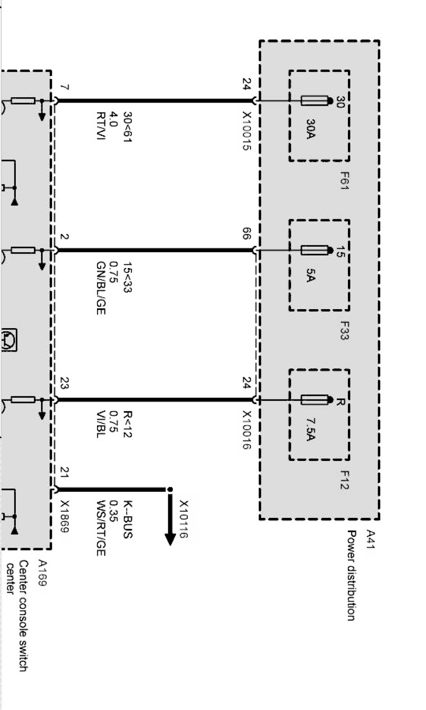
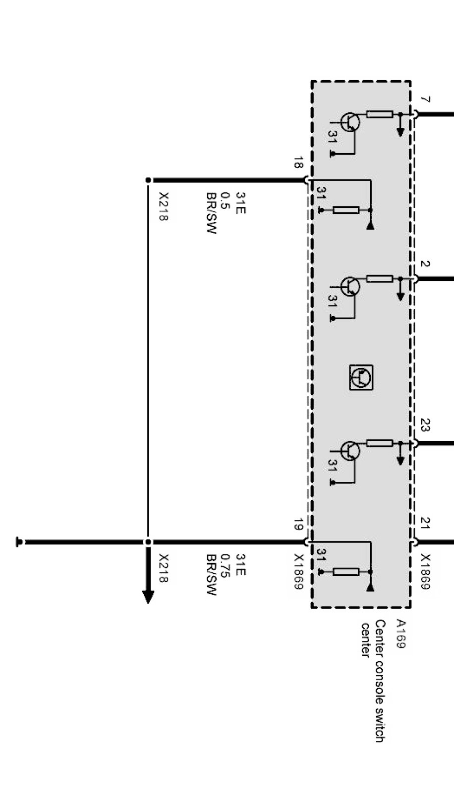

Operation CHARM
: Car repair manuals for everyone.
Home
>>
BMW
>>
2007
>>
X3 3.0si (E83) L6-3.0L (N52K)
>>
Repair and Diagnosis
>>
Diagrams
>>
Electrical Diagrams
>>
Chassis
>>
Wheel Slip Control System (DSC DXC83)
>>
Switch
>>
Switch Center, Center Console, Supply
Switch Center, Center Console, Supply
Supply, switch center Part 1:

Supply, switch center Part 2:
